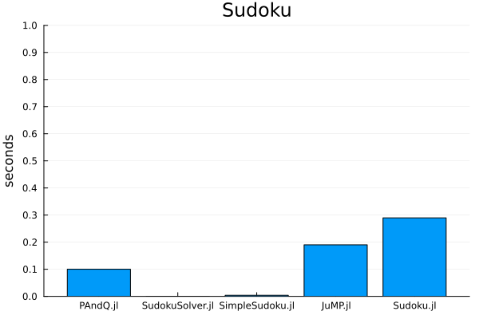

Benchmarks
This benchmark measures encoding, solving, and decoding a single solution to Sudoku. The times are given by the median of ten samples using BenchmarkTools.jl. Each package may have multiple implementations, so the minimum time of those is used. The implementation for PAndQ.jl corresponds to that of the Sudoku tutorial. The implementation for JuMP.jl is taken from their tutorial with minor modifications to satisfy the requirements of the benchmark.
See also the repository benchmarks folder.
